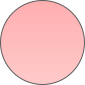

Masalah gizi anak di Indonesia masih menjadi tantangan besar

Di tahun 2024, jumlah anak balita di indonesia sebanyak
1%
Mengalami Stunting
(Gagal Tumbuh)
Berdasarkan Survei Status Gizi Indonesia, sekitar 1 dari 5 anak Indonesia masih mengalami stunting akibat kekurangan gizi kronis — angka yang meski menurun, tetap menjadi tantangan besar setiap tahunnya.
Di balik data ini, ada banyak keluarga yang sebenarnya ingin berubah, hanya belum tahu harus mulai dari mana.

Sekitar 1 dari 5 anak Indonesia tercatat masih
1%
Kekurangan Gizi Kronis
(Tingkat Nasional)
Di sini, Gizy mengajak kamu belajar pelan-pelan lewat infografis yang mudah dipahami, sekaligus tips sederhana yang sudah dicoba dan dibagikan oleh teman-teman.
Isi Piring Sehat yang Seharusnya
 Panduan
PanduanGizi Sehat

Karbohidrat
Sumber: Nasi, ubi jalar, kentang

Protein (Lauk Pauk)
Sumber: Tahu, ikan, tempe, telur, ayam

Sayur-Sayuran
Sumber: Bayam, wortel, brokoli, kangkung
Buah-Buahan
Sumber: Pisang, pepaya, jeruk, apel
Cek Kebutuhan Gizi Spesifik Si Kecil
Pilih jenis kelamin dan umur untuk melihat panduan kalori dan diagram gizinya.
Estimasi Kebutuhan Gizi Harian
1350 Kkal/hari
Fokus Perkembangan Usia Ini:
Pada usia 1-3 tahun, anak membutuhkan energi tinggi untuk belajar berjalan, berbicara, dan mengeksplorasi lingkungan. Lemak sehat sangat penting untuk perkembangan otaknya.